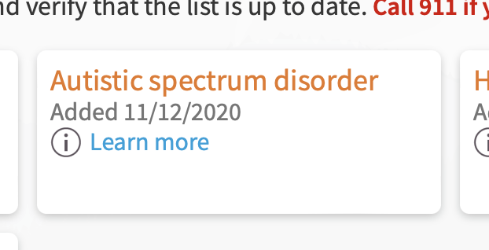

March 2022
This is a more complete version of a comment I left on Hacker News. I recommend reading the subject article by C.L. Lynch, "Autism is a Spectrum" Doesn't Mean What You Think.
I have autism. If you know me, that might surprise you. I appear neurotypical. I have a career, a marriage, and a social life. I like playing video games and fighting climate change. I don't need support from others on a daily basis.
And yet my psychologist, with 30 years of experience and a Ph.D. in clinical psychology, wrote it right there on my medical chart:
Autism spectrum disorder
This is because behind the scenes, there's a "me" hardly anyone sees. It's the me who can be paralyzed by a text message, whose day is ruined if teeth-brushing and showering happen out of order, and who spends ~an hour a day performing internal conversation planning and retrospectives. It's the me who was mute for nine years.
It's also the me who was taught that all these qualities are just character flaws that can be willed away.
You'd never notice that me, because I hide him well. And of the folks with autism, I'm not an outlier in doing that. In fact, 2% of all human beings have autism [1]. Statistically, you've certainly met several of them without realizing it. Does that surprise you?
We've all heard "autism is a spectrum". But that word, "spectrum", in that context, has had its meaning lost to time. Often people think of folks with autism as "high functioning" or "low functioning", as if these are positions on the spectrum. But a spectrum is not a scale. This is how to actually think about the autism spectrum:
There is no "more" or "less"; no "high" or "low". There is only "different". And yet people often still feel they know it when they see it; that people with autism either act like Rain Man or don't, and that those are the two (if even that many) types of autism.
What, really, is this subset of autism people think they can identify at a glance?
Autism symptoms are a deck of cards, and not all folks are dealt the same hand. Of the many, the DSM-5 calls out a few examples:
Deficits in developing, maintaining, and understand [sic] relationships, ranging, for example, from difficulties adjusting behavior to suit various social contexts; to difficulties in sharing imaginative play or in making friends; to absence of interest in peers.
DSM-5
Pay special attention to that first example, which I'll paraphrase as "inability to change behavior based on social feedback". We'll come back to that later.
One symptom I got dealt in my autism hand is a hearing hypersensitivity. As cool as it sounds, this is no superpower. My body's defense systems will sometimes malfunction and incorrectly believe things are too loud.
During one of these bouts, all the neurological safety mechanisms of an air horn being blown point-blank down the ear canal activate in response to innocuous sounds, like a person speaking or a computer mouse clicking. The brain goes through all the expected point-blank-air-horn feelings: startle, flinching, stress, panic. The intensity of these feelings prevent any real thought from coming into being as the metaphorical air horns shove their way through the grey matter.
In short, the all-around feeling of losing it.
Imagine going to a normal place like a grocery store, except on this particular trip to the grocery store dozens of people are point-blank blowing air horns into your ears, of random pitches and randomly starting and stopping. Maybe you'll understand me, then, when I say that as a kid I would sometimes collapse to the grocery store floor and roll around screaming with my hands against my ears, begging to go home.
In many ways, I'm one of the lucky ones. I didn't get dealt the "inability to change behavior based on social feedback" symptom. So when other people in the grocery store look at me like I'm losing it (reminder: I am) I can log that detail away, and work a little more towards silencing that canary next time. I've gone through several stages over 30+ years:
My actions are more socially acceptable now, but the sensation is the same. During a hearing hypersensitivity, inside I'm still that kid rolling on the floor screaming. The only difference is that I have learned to fake it away.
People dealt the "inability to change behavior based on social feedback" card get stuck on the rolling-on-the-floor-screaming phase. This, perhaps, is what the world thinks autism "looks like".
These people, who commit the cardinal sin of simply not faking it, often need more support because our world is not built to accomodate them or understand them well. But they are not any more "low-functioning" than I am "high-functioning". Those words are descriptions of how observers experience autism, not how autism-havers do. That's why these terms have fallen out of use since the DSM-5.
This ability to fake not having autism is called masking. Those of us who can, do it ~every day.
Masking a hearing hypersensitivity is just one example. Autism can come with several sensory hypersensitivities, and a full deck of other symptoms. For many of them, you can find great masking advice in online communities.
Other symptoms people may mask are:
Masking comes with its own set of issues [2], particularly that it's enourmously exhausting. It's as if the power-hungry problem-solving parts of the brain are being used to emulate a missing social common sense. For me personally, this means less brainpower to actually problem solve -- I am literally dumber when I am with others.
For these reasons, people with autism generally agree the best part of every day is the first moment alone one can "unmask", which I'd describe as a mental version of flopping down on the bed after a long day. Masking is a great tool and being able to use it is a blessing, but it means every day takes an extra toll.
I didn't find out I had autism until I was 30 years old. It explained so much about my life. The diagnosis served as a starting point for personal research, led me to a community of autism "study buddies", and has landed me on some meds that help with the worst parts. My relationships and personal happiness have dramatically improved. I can't help but wonder how many people through history have needlessly gone through the same troubles without the benefit an "aha" moment.
Of all human beings, 2% have autism; still many more are otherwise neurodivergent. I encourage you to feel comfortable, and make others feel comfortable, talking with family, friends, and doctors about ways you might feel different from others. It's a hard thing, to know if your brain is doing something different from other people's brains -- to try to reach a conclusion with a sample size of 1 and no control.
If someone talks to you about ways they feel atypical, be open to the idea that they might be onto something, instead of dismissing it because you haven't witnessed anything on the outside. They may in the end get the first step out of the dark: a mere description of what is wrong.
